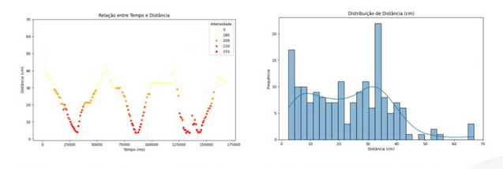

Sobre Mim
Sou um profissional apaixonado por visão computacional e análise de dados, focado no desenvolvimento de soluções inovadoras utilizando tecnologias de ponta. Minha experiência abrange desde o processamento avançado de imagens até a implementação de modelos de deep learning para resolver desafios complexos.
Habilidades
Visão Computacional
OpenCV • TensorFlow • PyTorch • YOLO
Desenvolvimento
Python • SQL • Git
Análise de Dados
Pandas • NumPy • Scikit-learn • Matplotlib
Projetos

Sistema de Visão Computacional
Sistema de detecção e reconhecimento de padrões em tempo real utilizando deep learning e processamento de imagens avançado.

Pipeline de Análise de Dados
Desenvolvimento de pipeline automatizado para processamento e análise de grandes volumes de dados, com geração de insights em tempo real.